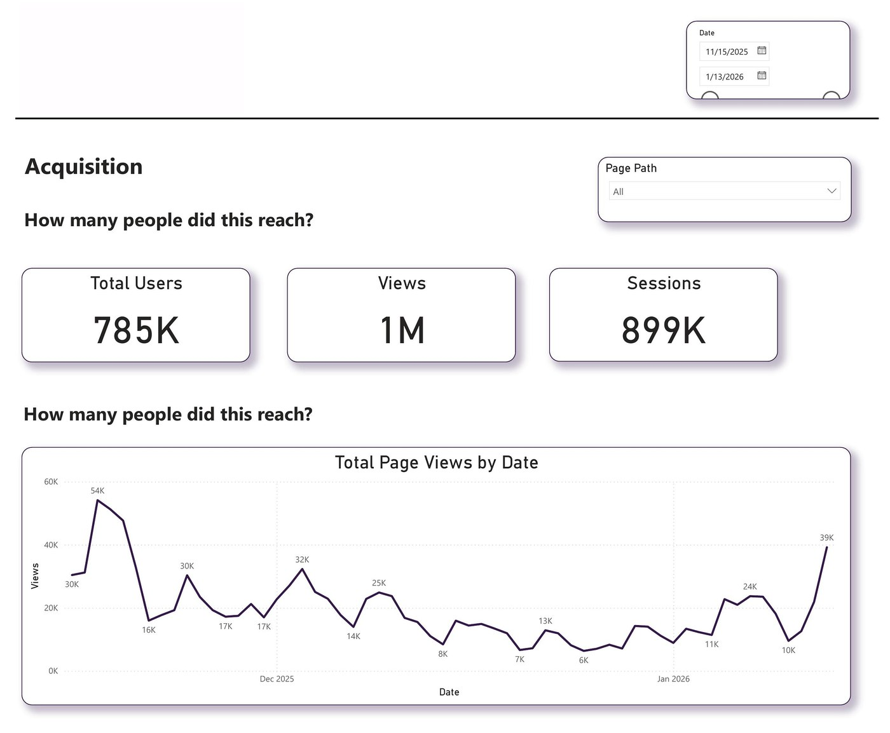
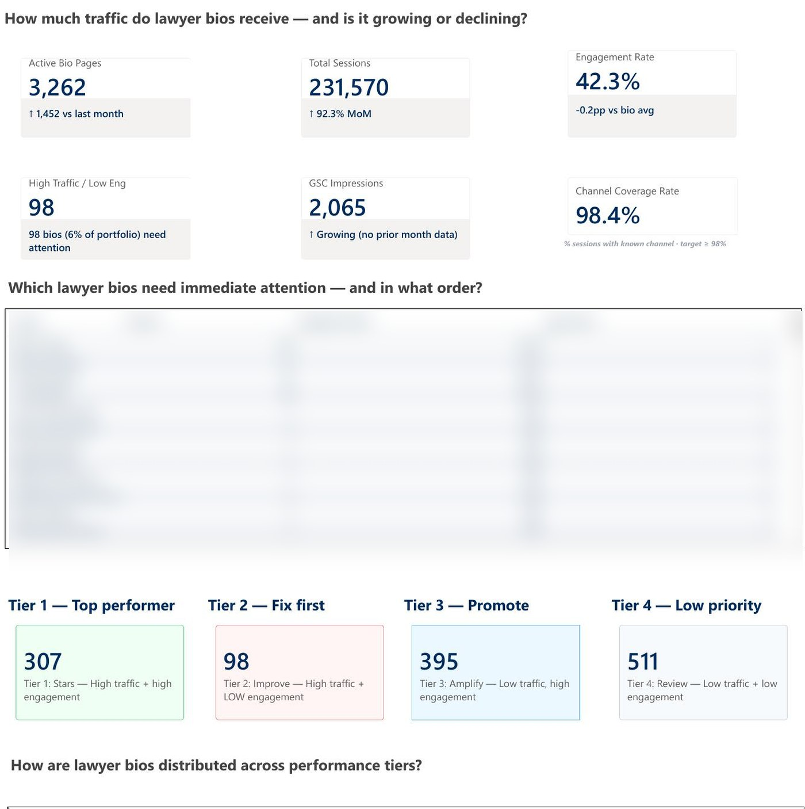
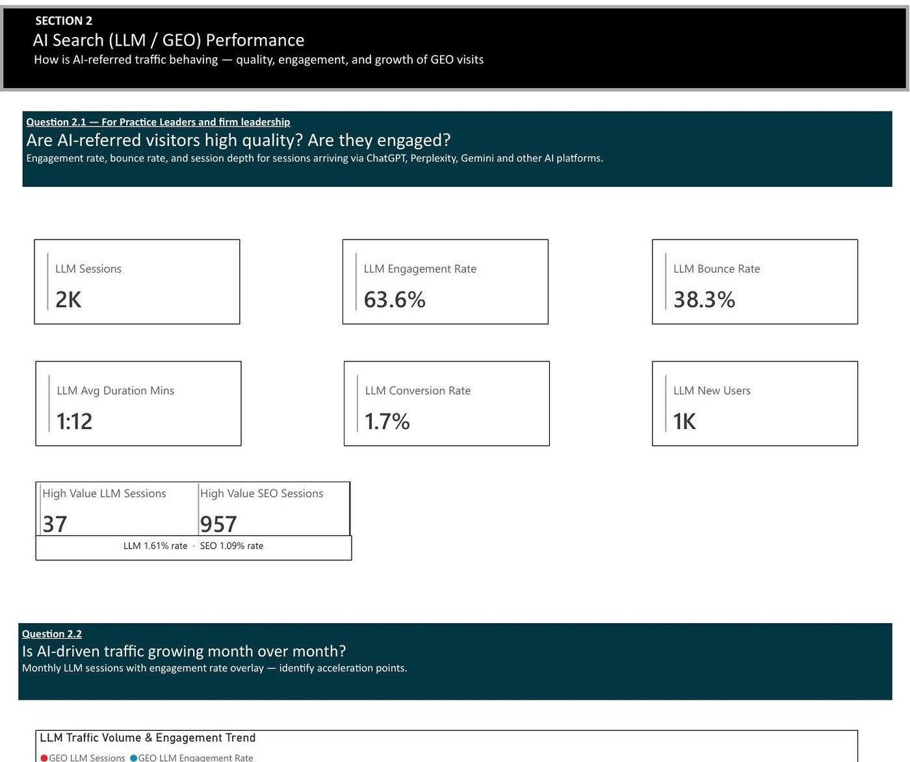
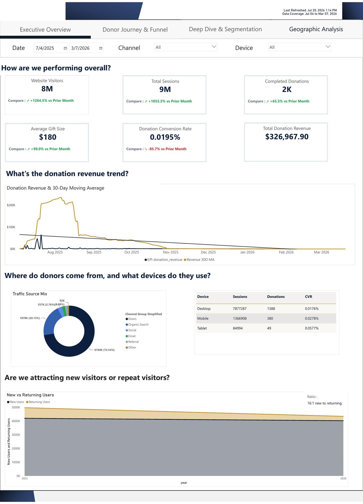

TRUSTED BY TEAMS ATGartnerAir CanadaHallmarkApplebee's / IHOPTaj HotelsHasbro
FEATURED PROJECT · ENGINEERING DEEP DIVE
One pipeline, one truth
Click through the pipeline stage by stage. Stages 3–5 show my real production code — client identifiers removed, logic untouched.
Business context
A multi-brand restaurant enterprise (Applebee's / IHOP) ran marketing, SEO, and product decisions across teams that each pulled numbers from different tools — GA4 UI, ad platforms, spreadsheets. Session counts were inflated by duplicate events, no two reports agreed, and monthly reviews opened with arguments about whose numbers were right.
My role
solution architectureGTM + data layer designSQL / Dataform modelingPower BI semantic modelstakeholder adoption
Standardized data layer — one spec, every template
Replaced ad-hoc tags with a documented data layer contract. Engineering pushes objects; GTM only reads. No tag ever scrapes the DOM.
// pushed by the site before GTM loads — the contract
window.dataLayer.push({
event: 'search_results_view',
search_term: 'gluten free menu',
search_results_count: 0, // zero-result searches: found for the first time
page_type: 'search'
});
GA4 custom event — instrumented beyond the defaults
Registered as a custom dimension so zero-result searches become queryable — the GA4 UI alone can't answer "what do users search for that we don't have?"
Staging — flatten the raw export (production code)
The daily events_* export nests everything in arrays and has no session table. Staging unnests it once — and the incremental filter only scans a 3-day window instead of full history, which cut daily processing cost dramatically.
-- definitions/staging/stg_ga4_events.sqlx (sanitized)
SELECT
PARSE_DATE('%Y%m%d', event_date) AS event_date,
TIMESTAMP_MICROS(event_timestamp) AS event_timestamp,
user_pseudo_id,
(SELECT value.int_value FROM UNNEST(event_params)
WHERE key = 'ga_session_id') AS session_id,
COALESCE(
(SELECT value.double_value FROM UNNEST(event_params) WHERE key = 'value'),
ecommerce.purchase_revenue
) AS event_value
FROM `client_project.analytics_XXXXXX.events_*`
WHERE ${when(incremental(),
`_TABLE_SUFFIX BETWEEN
FORMAT_DATE('%Y%m%d', DATE_SUB(CURRENT_DATE(), INTERVAL 3 DAY))
AND FORMAT_DATE('%Y%m%d', CURRENT_DATE())`)}
-- ⭐ was missing: pipeline scanned full history daily before this fix
Deduplication — a deterministic key, enforced by the build (production code)
Every event gets an MD5 identity key; the incremental merge on uniqueKey makes duplicates structurally impossible — replayed exports and double-fired tags can't create them.
config {
type: "incremental",
uniqueKey: ["event_key"],
bigquery: {
partitionBy: "event_date",
clusterBy: ["event_name", "user_pseudo_id"]
}
}
-- deterministic event identity: same event can never land twice
TO_HEX(MD5(CONCAT(
CAST(event_date AS STRING),
IFNULL(user_pseudo_id, ''),
IFNULL(user_id, ''),
CAST(IFNULL(custom_timestamp, 0) AS STRING),
CAST(event_timestamp AS STRING)
))) AS event_key
Dataform sessionization — the session table GA4 never gives you (production code)
First-touch attribution resolved inside the session, geo edge cases handled so BI visuals never show blank rows, partitioned and clustered for cheap queries.
-- definitions/intermediate/int_sessions.sqlx (sanitized)
config {
type: "incremental", uniqueKey: ["session_key"],
bigquery: { partitionBy: "session_date",
clusterBy: ["channel_group", "device_category"] }
}
SELECT
ANY_VALUE(session_key) AS session_key,
MIN(event_timestamp) AS session_start_timestamp,
-- first-touch attribution inside the session
ARRAY_AGG(session_source ORDER BY event_timestamp LIMIT 1)[OFFSET(0)] AS session_source,
ARRAY_AGG(channel_group ORDER BY event_timestamp LIMIT 1)[OFFSET(0)] AS channel_group,
-- geo fix: unresolvable IPs (VPN, IPv6) → 'Unknown', never a blank row
COALESCE(NULLIF(TRIM(
ARRAY_AGG(region ORDER BY event_timestamp LIMIT 1)[OFFSET(0)]
), ''), 'Unknown') AS region,
COUNTIF(event_name = 'page_view') AS page_views,
MAX(session_engaged_int) AS engaged_session_int
FROM ${ref("stg_ga4_events")}
GROUP BY user_pseudo_id, session_id
Power BI on tested marts — the number everyone finally agrees on
Semantic model reads only the marts. Every metric has one definition, in code, upstream of the BI tool. This is a production dashboard from the pipeline (client identity removed).

Technical challenges
The pipeline was scanning full history every day. The staging model had no incremental filter — every daily run reprocessed the entire GA4 export. Adding a 3-day incremental window with updatePartitionFilter cut daily scan volume to a fraction, with partitioning and clustering tuned for the dashboard's query patterns.
Duplication only reproduced in production. The GA4 export duplicated events under specific client-side conditions we could never trigger in test. Diagnosis came from distribution analysis in SQL — comparing raw row counts against the UI's silently-deduplicated numbers, day by day, until the pattern isolated the key.
"Session" meant three different things. Stakeholders carried Universal Analytics expectations; GA4 has an event model; the export has neither's session table. The fix was social as much as technical: one definition in code, plus reconciliation queries that explain variance vs the GA4 UI instead of arguing about it.
Outcome
Reporting became consistent across every team. Funnel analysis on clean data found checkout friction that contributed to a ~20% conversion improvement, and zero-result search tracking handed the content team a prioritized topic list. The monthly numbers argument ended — the pipeline is the referenced source in decision meetings.
Lessons
Data trust is a stakeholder problem before it's a technical one. Reconciliation evidence, not architecture elegance, is what converts skeptics. And sessionization logic belongs in version-controlled SQL — never in a BI tool's formula layer.
IMPACT
Numbers from real engagements
20%
conversion lift — funnel analysis on the cleaned pipeline
$200K
reporting risk averted — Hallmark UA→GA4 migration, zero data loss
20+hrs
manual reporting eliminated monthly — SAP BEx → Power BI paginated
0
pre-consent requests — GDPR architecture, verified by network logs
ARCHITECTURE
The chain I build, stage by stage
Not a generic diagram — this is the production architecture behind the featured project. Watch it light up.
Website / Appdata layer contract
GTMconsent-gated tags
GA4events + custom dimensions
BigQuery rawdaily events_* export
Staging · dedupDataform, assertion-tested
Sessionization · attributionthe tables GA4 never gives you
Martsfct_sessions · fct_conversions · dim_users
Power BIsemantic model · incremental refresh
Executive dashboardone number everyone agrees on
MORE PROJECTS
Different problems, different stories
REVENUE ACTUAL
$4.21M vs plan +2.4%
OPEX
$1.37M vs plan −1.1%
MARGIN
31.2% ▲ 0.8pp
REPRESENTATIVE — FINANCIAL DATA CONFIDENTIAL
WOLVERINEMIGRATION STORY
Retiring SAP BEx without losing the numbers
Finance ran on deprecated SAP BEx reports kept alive by manual effort and shrinking expertise. They wanted their exact formats — not a redesign.
The move
Audit-first migration: every metric, filter, and hierarchy documented before building pixel-faithful Power BI paginated reports. Parallel run with reconciliation on every figure before cutover.
The lesson
In legacy migrations the deliverable is continuity, not modernity. Match the old output exactly; improve later.
GA4, Ads, Meta, and LinkedIn fired on page load — before the consent banner. A compliance exposure most stacks quietly carry.
The scale
A real enterprise container: 52 tags, 39 triggers, 68 variables — 16 GA4 event tags, 15 custom HTML tags, ad pixels for Google, Microsoft, Meta and LinkedIn, plus deprecated tags dating back to 2017 that nobody remembered adding.
The hunt
Gating the container was easy. The hard part was hardcoded tags outside GTM that no trigger could block, and race conditions where tags beat the consent check at real page speeds — found by watching network logs, template by template, browser by browser.
The proof
A repeatable QA framework: zero network requests from gated vendors pre-consent, verified across regions. Evidence, not assurances — it passed legal review without findings.
Impact: zero pre-consent collection — with a functioning measurement stack, not a gutted one.
CONSENT GATING FLOW

PRODUCTION DASHBOARD — NAMES BLURRED FOR CONFIDENTIALITY
AMLAW 100 LAW FIRMBUSINESS TRANSFORMATION
3,262 lawyer bios, ranked by what they earn
A top law firm had thousands of attorney bio pages and no way to know which deserved SEO and content budget.
The shift
From "what happened?" to "what do we do Monday?" — every bio scored on traffic, engagement, and conversions, then sorted into a 4-tier action framework: stars, fix-first, promote, low priority.
The adoption
Marketing stopped debating anecdotes. Tier lists became the agenda.
Impact: SEO & content budget reallocated by tier — opinion replaced with data.
AMLAW 100 LAW FIRMINNOVATION STORY
Measuring AI search before most firms knew it existed
Visitors started arriving from ChatGPT, Perplexity, and Gemini. Leadership asked the question nobody had a dashboard for: are AI-referred visitors any good?
Built
LLM/GEO referral classification in the GA4 → BigQuery pipeline, plus a dashboard answering leadership's actual questions: AI-visitor quality vs SEO, month-over-month LLM growth, and which content categories AI engines cite.
The finding
AI-referred sessions converted at a higher rate than organic search (1.61% vs 1.09% on high-value actions) — small volume, outsized quality. That reframed the firm's content strategy for generative search.
Impact: first visibility into AI-search performance — a measurement category most firms still can't see.

PRODUCTION DASHBOARD — CLIENT IDENTITY REMOVED

PRODUCTION DASHBOARD — CLIENT IDENTITY REMOVED
NATIONAL MEMBERSHIP NONPROFITOPTIMIZATION STORY
The conversion rate that lied
The donation conversion rate collapsed −85.7% month over month. Panic — until the dashboard told the whole story.
The decomposition
Traffic had spiked +1,264% on viral content while donations actually rose +65.5% and average gift size doubled (+99%). The "collapse" was denominator dilution — millions of new low-intent visitors, not a broken funnel.
Why it worked
The dashboard was built to decompose, not just display: every rate KPI sits beside its numerator and denominator, with donor journey and funnel views (on the same GA4 → BigQuery → Dataform pipeline) to separate mix shift from real failure.
Impact: stopped a false alarm from redirecting strategy — and turned a traffic spike into a donor-acquisition analysis instead.
HOW I WORK
Process is the product
Enterprises don't just buy dashboards — they buy a repeatable way of getting to trustworthy ones.
01
Discovery
What decisions need data they don't trust today?
→
02
Audit
Tags, data layer, consent, warehouse — inventory before opinion.
→
03
Implementation
Tracking, models, dashboards — in code, in version control.
→
04
Validation
Assertions, reconciliation, network-log proof.
→
05
Documentation
Every metric defined once, findable by the next person.
→
06
Training
Teams run it without me. That's the exit test.
ENGINEERING PHILOSOPHY
Four rules, in order
01
Measure correctly
A documented data layer contract. GTM reads; it never scrapes. Consent is enforced at the gate, not promised in a policy.
02
Model correctly
Dedup and sessionization live in version-controlled SQL, upstream of every report. One metric, one definition.
03
Validate everything
Assertions fail the build before bad data reaches a dashboard. Reconciliation queries explain variance instead of arguing about it.
04
Only then visualize
The dashboard is the last mile, not the fix. If the number is wrong upstream, no visual will save it.
GITHUB
Open work
Production patterns rebuilt on Google's public GA4 dataset — open the code, don't just read claims.
github.com/vanu270
The flagship repo rebuilds the featured pipeline end to end: layered Dataform models, dedup and sessionization SQL, assertions that fail the build on bad data, and reconciliation queries against the GA4 UI.
My first job was SEO, in Mumbai, in 2014. One month a client's traffic report showed a glorious spike — everyone celebrated. I dug in and found it was a bot crawling one broken page. Nobody had checked. That moment set the question I've been answering ever since: how much of what companies "know" is actually true?
The problems that excite me are the ones where the number is wrong and nobody knows why.
That's why I went deep instead of wide: four years at TCS building marketing analytics for Air Canada, Hasbro, and Taj Hotels; then Hallmark's UA→GA4 migration at Astound with zero data loss; now full pipeline engineering at Bitwise for Applebee's/IHOP, Gartner, and Wolverine. Duplicate events, consent race conditions, undocumented BEx logic — the unglamorous places where trust is actually won or lost.
Clients keep me around for the same reason each time: when my number differs from another tool's, I can show exactly why — in SQL, with evidence. I work remotely from Bangalore with teams across the US and Europe, and I write about this stuff because almost nobody else does.